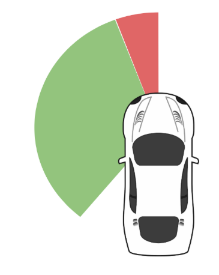
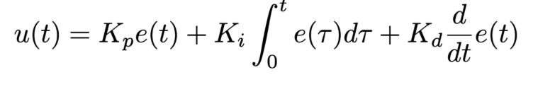

Authors: Ethan Garza, Wilson Guo, Suzanna Jiwani, Charles Magaw, Christian Schillinger Editor: Suzanna Jiwani
Written by Charles Magaw
The end goal of Robotics Science and Systems (RSS) is to autonomously race a robotic racecar around a track which is in the basement of Stata. Throughout the duration of this lab, we implemented low level control using state estimation and signal processing. Specifically, the goals of this lab were to build an autonomous wall follower and safety control. The wall follower makes the racecar follow a right or left wall at a given distance in meters. The safety control prevents collisions while the racecar is following a wall.
The first milestone is manual control of the racecar. Once connection is established with the racecar, the next step is to visualize the laser scan data from the onboard LIDAR. This laser scan data is the input to the wall follower and safety controller. Then the built wall follower script and safety controller script are uploaded to the racecar for further testing and refining.
In order to achieve the desired level of control, we will be using ROS’s built in functions such as packages, nodes, and topics. Packages are used to provide functionality and to store software that can easily be reused. We will implement two ROS packages containing nodes to control the racecar. A node is a process that performs some computation. Nodes can communicate with each other by publishing or subscribing to topics. These topics are like messages between topics. Publishing is when a node outputs data that can be accessed by other nodes. Nodes access this published information by subscribing to the topic.
The reusability of ROS nodes will allow us to improve our design and apply it to more complicated tasks in future labs. The final lab will be an obstacle course where wall following and safety control will be used in conjunction with other functions that will be implemented in future labs.
Written by Christian Schillinger
Two functionalities on the car platform acted as stepping stones for the two autonomous processes as part of this lab. The first was manual control. Our manual control works using a wireless handheld controller, as shown in Figure 1.
Figure 1: This image shows how the controller is used for manual driving. To activate the manual controls, the left bumper is depressed and held, operating as a “dead man’s switch.” Manipulation of the right joysticks steers the car until the bumper is released.
These controls were very useful in the debugging of our early wall following scripts. The original scripts often drove the car into the wall or into the middle of the room, and the controller allowed us to reset the car to a reasonable starting position with relative ease. The manual controls were also useful in resetting the car to the starting position while gathering quantitative data about the performance of our wall follower. The handheld controller was also used to start and stop the wall following and safety stop processes on the car, as shown in Figure 2.
Figure 2: This image shows how the controller is used for autonomous driving. To activate the autonomous processes (wall follower and safety stop), the right bumper is depressed and held, also operating as a “dead man’s switch.” The car will continue to drive until either the button is released or the safety controller stops the car.
The second important functionality in the development of our autonomous processes was the visualization of the data from the onboard LiDAR, a device that emit lasers at specific angles and measures when they return in order to determine the distance to the first obstacle in every direction. By visualizing this data in the ROS supported “rviz” command (Figure 3), our group was able to observe the room or hallway in the same capacity as the robot.
Figure 3: This image on the left shows the robot in front of a couch, and the image on the right shows the LaserScan topic data from the LiDAR rendered in rviz. The various colors represent the various reflectivies of the objects surrounding the car.
In order for the wall following process and the safety stop process to run simultaneously, our system uses a hierarchy of command priority. Both the wall follower and the safety controller subscribe to the laser scan topic data and publish to topics controlling the movement of the car, as shown inFigure 5.
Figure 4: This graphic was created using the ROS supported rqtgraph command, and shows the order of subscriptions and publications within our system.
A command multiplexer prioritizes these navigation and safety movement topics, putting safety above navigation. While the car drives without immediate obstacles, the multiplexer pipes through the navigation topic, ensuring the car follows the wall. If the car detects an obstacle and therefore publishes to the safety topic, the multiplexer pipes through the safety topic, stopping the car until the obstacle is removed (Figure 6).
Figure 5: The image above shows the pipeline of topics within our system, outlining how the safety controller interacts with the autonomous processes steering the car.
The first step to following walls is simply understanding where the wall is. The racecar comes equipped with a LiDAR which can send us information about the car’s surroundings. After receiving all of the LiDAR data, we need to do some preprocessing to ensure the data that we’re working with is both useful and not so large as to be computationally inefficient. In order to do that, the script first immediately ignores over half of the data coming from the LiDAR by looking only at one side of the robot’s LiDAR information. For example, if we know that we want to follow the left wall, the script will only look at data given from the left side of the car. In simulation, we started by simply splitting the data in half.
However, in practice, we realized that including information directly in front of the robot caused too much error. For example, when the robot turned slightly to readjust its distance from the wall it was following, it would see the opposite wall in narrow hallways and take those points into account, thinking there was a corner when there wasn’t. Thus, the robot would turn when it shouldn’t, so we decided to amend this error by removing some of the points from in front of the car. This thinking is represented in the image below, where the range of scan shown was initially all used, and then the red portion was removed.

Figure 6: The LiDAR segment used when following the left wall, where green represents what was kept and red represents information that was discarded
Once we determined which portion of the laser scan data that we wanted to use, we removed all of the data that was too far away or too close. We decided to use the metric for “too far away” based on results in the simulation - ignoring information about obstacles that were three times the desired distance away allowed the car to make turns closer to corners, thereby staying closer to the desired distance from the wall. The decision to remove information about obstacles that were three times the desired distance away was determined experimentally; other scales worked well, but ultimately, this metric worked best because it made the car stay closer to the desired distance from the wall for longer.
We also decided to ignore data that was too close because we learned the LiDAR was reporting points on the car like wires and other hardware and our program used those points to determine where the wall was. To fix this, we decide to ignore data within a tenth of a meter - essentially, just data from the car itself.
The next step is to take all of the information that wasn’t parsed out and turn it all into a single line where the wall is. Since all of the information given is through polar coordinates (where each point is described by an angle from the x axis and distance from the origin), we first converted into cartesian coordinates and then ran a linear regression on the data using numpy.polyfit. This would give us a line that best fit all of the data points that we decided to keep - this is the line that represented the wall.
Once we had a single line that represented where the wall was, we could compute the distance from the car to the wall and then run a controls algorithm to maintain the desired distance from the wall. We implemented a PID (proportional-integral-derivative) controls algorithm. At the core of PID control is the proportional control; this ensures that we correct the car’s position proportionally to its error, essentially how far it is from the desired distance. If the error is small (so the car is very close to where it should be), then we only want to turn the car a little bit in the right direction rather than turn it as much as possible. This correlation is given by a ‘gain’ component known as $$K_p$$. The derivative and integral terms work similarly - they multiply the error’s derivative and integral by derivative gain (K_d) and integral gain (K_i), respectively. We determined K_p, K_d, and K_i experimentally by testing many combinations until we found one that worked best. The entire formula for the control given to the car is shown below, where u(t) is the control term.

One of the main concerns of an autonomous vehicle is whether it will stop before a collision. With the safety controller, we want to override any other controller to maintain preserve the car’s safety, and resume autonomous activities once the car is out of harm’s way. Our controller needs to be robust enough that it would guarantee the car’s survival even during high speeds which we implement in later labs, while providing enough freedom that the racecar main function, autonomous driving, remains unhindered.
On a macro-level, the racecar constantly detects objects in front of it by sending out a LiDAR signal. With the retrieved information, we are able to determine if an object is too close to racecar, and if so, we will stop the car immediately until the object is no longer within a close distance. Additionally, we only want to drive if we have enough width to safely navigate through.
On a more technical level, we select the LiDAR signals that are within the range forty-five degrees to the right to forty-five degrees to the left and process them into (x,y)-coordinate pairs with respect to the racecar as the origin. Such a selection allows us to detect obstacles from a wide range and processing them helps us determine which points represent nearby objects. We define a dangerous nearby object as one that is within 0.3 meters of the vehicle. If ten percent of these objects are within the defined threshold, then we choose to immediately stop the car by setting the speed to zero. During the designing phase of our algorithm, we decided to only tinker with the speed of the car and not the acceleration. Enforcing a deceleration during the safety controller phase could have led to computationally expensive problems and affected the wall follower. Additionally, adding in an acceleration factor could have forced us to have to collect more experimental data since the simulations do not provide real-world facts(i.e. friction).
The other major feature of our safety controller is checking for a large enough region to drive through. To implement this feature, we experimentally chose to set the lateral threshold to one meter to give the racecar a generous amount of space. With the information collected and processed from the LiDAR, we search through all the points and determine if there exists a space between consecutive points is above our threshold. If there exists such a gap, then the car moves autonomously in accordance to the wall follower script. On the other hand, if there is no gap wide enough to support the vehicle, then we force the racecar to stay put until it can find another path using the wall follower algorithm.
Due to a number of hardware and various other technical issues throughout the duration of the lab, successfully running the teleop command to use the manual controls (Figure 4) was an accomplishment only achieved late in our process.
In order to measure the accuracy of our wall follower code when implemented on the racecar, we set up a miniature obstacle course for the racecar to follow, starting with a straight wall, then turning a corner, then avoiding boxes. We put tape down on the floor that showed where a distance of 1 meter was from the wall, and then we measured the total time that the tape was between the front two wheels of the car as opposed to the entire time that it took to drive the course. The data that we found is shown below.
| Desired Distance (meters) | Velocity (m/s) | Total Run Time (s) | Time outside line (s) | Percent Accuracy |
| 1 | .5 | 47.23 | 9.41 | 80.08 |
Table 1: Data taken to determine accuracy of wall following
Ideally, we would have taken at least three measurements at the velocity and desired distance shown (.5 m/s and 1 meter, respectively) and then three more at various other velocities and distances, but before we were able to do so, we ran into some hardware issues with the motor driver that we weren’t able to solve since we couldn’t bring our car to office hours.
Once our wall follower worked in simulations, we needed to be able to upload our files onto the racecar and test if the car would adhere to the safety protocols. Although the car did faithfully stop before crashing into any objects, the distance between the object (i.e. a wall) and the vehicle was approximately 15 centimeters, much shorter than the threshold we enforce in the code. One possible explanation for the difference is the time it takes for the racecar to reach zero velocity once the vehicle. The speed of the racecar cannot be changed instantaneously which means that once we detect a dangerously close object we dramatically slow down first and then stop.
Here, we will revisit the overall goals of this milestone defined in the introduction along with the progress achieved within the allotted time in the order as they were introduced.
We successfully control the race car manually and visualize the related LIDAR information in real time. By this, we were able to successfully connect the car to our server and create a network between the car and our personal computers. This allowed us to “SSH” into the car over the local network and activate the car into “listening” mode where we were able to manually drive it wirelessly with a gaming controller. This also allowed us to upload our personal scripts and packages to run on the car for autonomy and visualize the LIDAR inputs from the race car through RVIZ as it was received. This will serve as the groundwork for uploading all other packages we develop and test for real world application and development.
By meeting our first milestone, we were able to upload and test our wall following algorithm developed from simulations onto our race car onboard in real time. This was done by changing our algorithm into an executable ROS package that was then able to be deployed and tested locally onboard our race car. As the algorithm did not perform as expected from the simulations, we were able to fine tune our algorithm to run more effectively on the race car.
We were also developing a safety controller in parallel to prevent the car from crashing in a fashion very similar to the wall following package. We first developed the appropriate scripts, tested them through our simulator, then created a ROS package for it. The ROS pipeline was then set to run our safety controller script before any other script as the safety of our race car was our top priority so that it wouldn’t destroy itself during future milestones. This feature was thoroughly tested through live deployment and never failed to stop itself before running into or, “bumping” a wall or unexpected obstacle introduced in its path.
As our originally stated milestones were stated vaguely, we decided to define the extent that each milestone was met. Although they were met to the satisfaction of each teammate’s personal interpretation, we acknowledge further improvements that can be made. We hope to further improve the effectiveness of each deployed package and explore and test other intuitively different approaches.
Teamwork makes the dreamwork. There were defining moments when the team truly worked together to meet the milestones. When this happened, everything was very smooth and extremely time effective. I had learned about the additionally expected noise received by the LIDAR on the physical racecar that was not originally expected. I expected some accuracy errors, but was not prepared for the race car to sense itself and render as an obstacle.
The simulation does not capture all the physical laws the real world requires. Therefore, when designing the safety controller, it was definitely smart to be extra careful and give the racecar more than enough room to hit the brake. While practicing our presentation for the lab, I learned that not only was I unaware of using filler words myself, but also I had become so unphased by them that I couldn’t easily recognize when others were using them. Moving forward, I want to rehearse presentations more such that I can completely eliminate filler words in my speech.
I learned that when everyone on a team cares about their common goal, a lot can get done. I really appreciate having team members who have similar goals for the class as I do and who are easy to work with. Technically, I learned a lot about implementing a PID controller in real life. Though I had done some work with it before, I didn't really know how to implement the control algorithm in a way that maximized accuracy. Now, I understand more completely the effects that Kp, Kd, and Ki have.
Collaboration is key. In many ways having two opinions or points of view on a problem made our solution better. We must continue to work together and listen to each other's ideas.
I learned to ensure simulation software is robust before transitioning to the physical world, but do not spend large amounts of time optimizing values that will be found empirically for the final product. There are complications when using the actual race car, and a perfect simulation does not equate to a perfect autonomous process. Additionally, I learned to document the technical process throughout the lab and try to stay as organized as possible with notes in order to be more effective as a communicator. Doing so will make reporting your work less difficult, as it will be easier to remember and describe the important caveats or problems within the project.